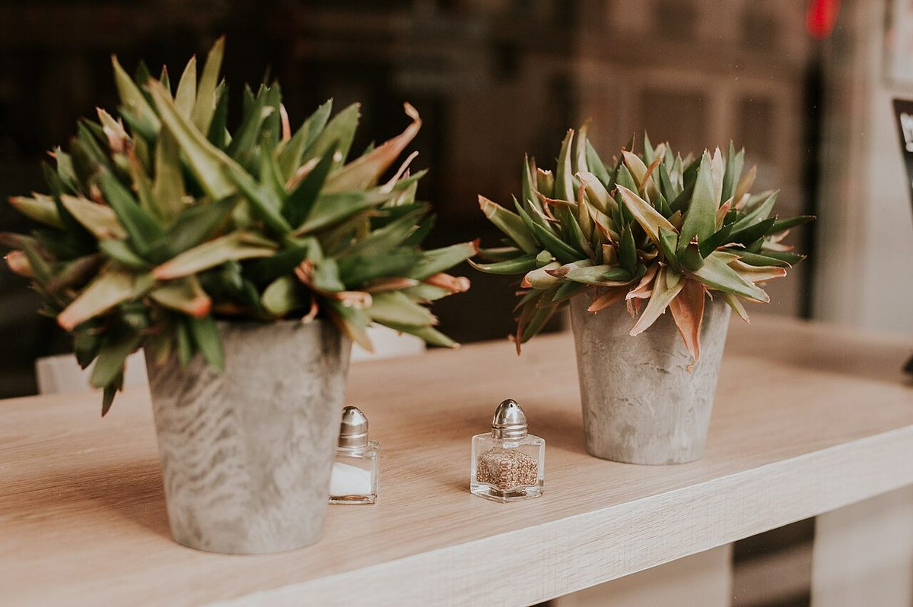
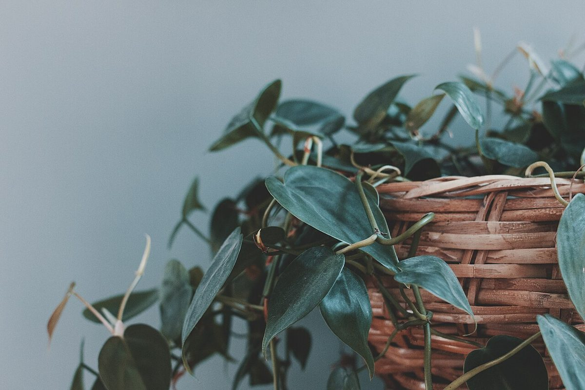

お店について
新潟県燕市下粟生津にあるカフェ、more cafeです。

お店の紹介
詳しい紹介文は準備中(お問い合わせください)です。
- 店名の由来準備中(お問い合わせください)
- お店の理念準備中(お問い合わせください)
- 店主・スタッフ準備中(お問い合わせください)
- 開業時期準備中(お問い合わせください)
制作側の案
このサイトの制作側から、仮のコンセプトとして「ひと息、もうすこし。」を提案しています。店名の綴りから連想した、制作側の案です。お店の実際の理念や、店名の意味を示すものではありません。実際の考え方は、店主さまへの確認が必要です。
基本情報
| 店名 | more cafe |
|---|---|
| 業種 | カフェ |
| 住所 | 新潟県燕市下粟生津616-10 |
| 電話 | 090-4917-1598 |
| https://www.instagram.com/morecafe0915/ | |
| 営業時間 | 準備中(お問い合わせください) |
| 定休日 | 準備中(お問い合わせください) |
| 料金 | 準備中(お問い合わせください) |
| 席数 | 準備中(お問い合わせください) |
| 駐車場 | 準備中(お問い合わせください) |

写真のクレジット
このサイトの写真は、フリー素材のイメージです。店舗の実際の様子ではありません。他地域で撮影されたもの、撮影地が不明なものを含みます。
写真はクリエイティブ・コモンズ・ライセンス(https://creativecommons.org/ で各条件を確認できます)のもとで公開された素材を使用し、縮小・切り抜きなどの加工をしています。